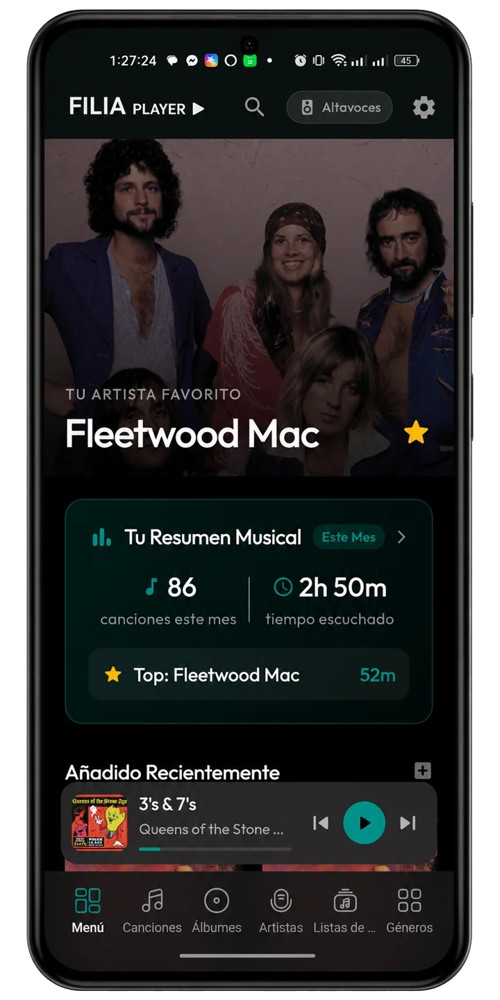
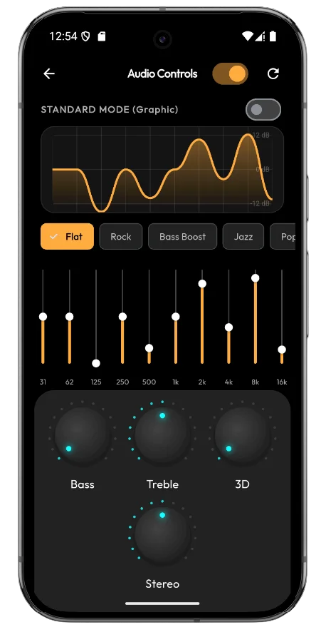
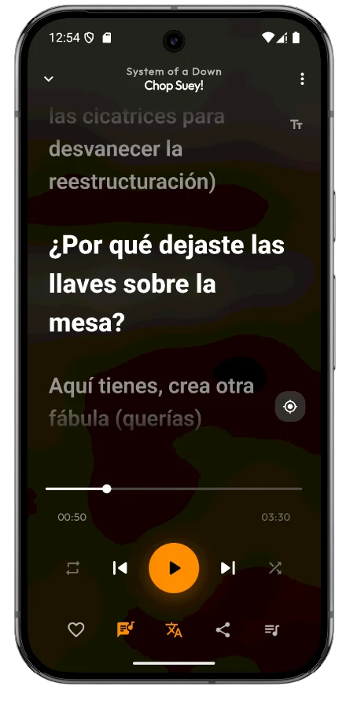

Filia Player
Sonido bit-perfect. Cada nota llega a tus oídos exactamente como fue grabada.
Tu biblioteca local, sin recompresión ni remuestreo. FLAC, DSD, ALAC y prácticamente cualquier formato, reproducidos con fidelidad absoluta.

Escucha la diferencia
La misma canción, dos formatos: MP3 comprimido frente a FLAC sin pérdida. Alterna entre ambas y deja que tus oídos decidan — el espectro reacciona en tiempo real.
⚠ No se encontró el archivo {{ t.src }}. Colócalo en la carpeta uploads/ con ese nombre.
Dos modos, control total
Del ajuste rápido por bandas a la precisión quirúrgica de un EQ paramétrico. Cambia de modo y compáralo tú mismo.




Si tu música no trae letra, Filia la encuentra
Un solo toque basta. Filia consulta su biblioteca integrada de letras, encuentra la de tu canción y la sincroniza línea a línea — sin descargar nada aparte, sin apps de terceros, sin salir del reproductor.
Con traducción integrada incluida: canta en cualquier idioma, entiende cada verso.
Optimizada para teléfonos y tablets
La interfaz se adapta de forma nativa a cada pantalla: en tablets, reproductor y letras conviven lado a lado; en el teléfono, todo queda al alcance del pulgar.


Diseñado para oídos exigentes
{{ f.title }}
{{ f.body }}
Dentro de la app
Si existe, Filia lo reproduce
Motor de decodificación basado en FFmpeg: prácticamente cualquier códec de audio jamás creado, sin conversiones previas.
{{ fmtDetail.note }}
Toca cualquier formato para ver su ficha técnica.
…y muchos más: APE, TTA, Musepack, TAK, módulos tracker y todo lo que FFmpeg sepa decodificar.